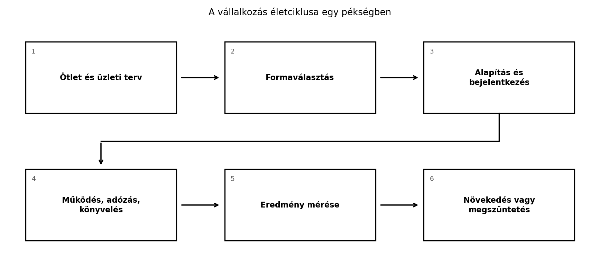

Egy induló pékség tulajdonosa nemcsak a kenyér receptjét dönti el, hanem azt is, milyen jogi formában működjön a vállalkozás, hogyan adózzon, és honnan tudja meg, hogy a cég valóban nyereséges-e. Ugyanaz a havi bevétel egészen mást jelent egyéni vállalkozóként, mint egy kft.-ben, mert más a felelősség, az adminisztráció és az adóteher. A bank, a beszállító és a hatóság is másként néz egy egyéni vállalkozóra, mint egy társaságra. Ha a pék érti a mérleg és az eredménykimutatás szerkezetét, akkor nemcsak a kemence mellett áll meg, hanem a vállalkozás pénzügyi oldalán is.
Valós eset. Egy kézműves pékség havonta elad 2 millió Ft értékű kenyeret és péksüteményt. A tulajdonos a bankszámlán látja, hogy nőtt a pénz, ezért azt gondolja, nagy a nyeresége. Közben azonban a lisztet 60 napos fizetési határidővel vásárolta, a kemence részletét még fizeti, és elmaradt az adóelőleg. A látszólagos „jó hónap” valójában hibás pénzügyi képet mutat. A mérleg és az eredménykimutatás arra való, hogy ezt a képet helyre tegye.

Az ábra azt mutatja, hogy a vállalkozási forma megválasztása már az indulás előtt eldől, és az egész működésre kihat. A mérleg és az eredménykimutatás a „Eredmény mérése” lépésben ad rendszeres, megbízható képet.
Definíció. A vállalkozás rendszeres, saját kockázatvállalással járó gazdasági tevékenység, amelyet a vállalkozó jövedelemszerzés céljából, termelő vagy szolgáltató tevékenységgel végez. A pékség mint vállalkozás lisztet, élesztőt, munkaidőt és gépi kapacitást használ fel, hogy készterméket adjon el.
Szerepe a pékségben. A vállalkozás teremti meg azt a keretet, amelyben a pék: - szerződéseket köthet, munkavállalókat alkalmazhat, - hitelt vehet fel, gépet vásárolhat, - adózik, és elszámol a hatóságokkal, - a nyereséget szabályosan kiveheti vagy visszaforgathatja.
Csoportosítás. A hazai gyakorlatban a leggyakoribb formák: - egyéni vállalkozó, - gazdasági társaságok, elsősorban a korlátolt felelősségű társaság (kft.) és a betéti társaság (bt.), ritkábban közkereseti társaság (kkt.) vagy részvénytársaság (zrt. vagy nyrt.) (ellenőrizendő: Ptk.), - nonprofit vagy egyéb szervezetek sütőüzemi tevékenysége ritka, ezért csak megemlítjük.
A választásnál a pékség induló tőkéje, kockázata, adózási elképzelése, hiteligénye és a tulajdonosok száma a meghatározó.
Definíció. Az egyéni vállalkozó természetes személy, aki a saját nevében, saját kockázatára, üzletszerűen folytat gazdasági tevékenységet. A pékség jövedelme a magánszemély jövedelme.
Jellemzők. - Alapítása egyszerű, bejelentéssel történik, nincs kötelező törzstőke (ellenőrizendő: a hatályos nyilvántartási szabályok). - A vállalkozó a magánvagyonával is felel a pékség tartozásaiért. Ha a pékség csődbe megy, a hitelezők a vállalkozó személyi vagyonát is követelhetik. - A nyereség jellemzően a személyi jövedelemadó (SZJA) hatálya alá esik; az SZJA-n belül több adózási mód választható (vállalkozói jövedelem szerinti adózás, átalányadózás), ettől eltérő, önálló adónem a tételes adó, ha feltételei teljesülnek (ellenőrizendő: Szja tv., Katv., NAV-tájékoztató). - Előnye az alacsony adminisztráció, hátránya a korlátlan felelősség és a nehezebb tőkebevonás.
Definíció. A kft. önálló jogi személy, amelynek tagjai törzsbetétjük összegéig kötelesek vagyoni hozzájárulást teljesíteni. A tag a társaság tartozásaiért főszabály szerint nem felel a saját magánvagyonával.
Jellemzők. - Alapítása ügyvédi okirattal, cégbírósági bejegyzéssel történik, és törzstőke szükséges (a minimális mérték ellenőrizendő). - A pékség nevében a kft. köthet szerződést, hitelt vehet fel, és a felelősség a társasági vagyonra korlátozódik. - A nyereség először társasági adó (TAO) vagy kisvállalati adó (KIVA) alá esik; a tulajdonosnak kivett osztalék után további adó terhe keletkezhet (ellenőrizendő: adómértékek). - Előnye a magánvagyon védelme és a jobb hitelképesség, hátránya a nagyobb alapítási és könyvelési teher.
Definíció. A bt. olyan gazdasági társaság, amelyben legalább egy beltag és legalább egy kültag van. A beltag a társaság tartozásaiért saját vagyonával korlátlanul és egyetemlegesen felel, a kültag viszont csak vagyoni betétje erejéig.
Jellemzők. - A pékségben a beltag gyakran a szakmai irányító, aki napi döntéseket hoz, a kültag pedig tőkével beszáll. - A bt. alkalmas családi vagy kis üzleti közösség számára, de a beltag kockázata nagy. - Az adózása alapvetően hasonlít a kft.-hez, de a beltag jövedelme egyéni sajátosságokat is hordoz (ellenőrizendő). - A kültag befolyása korlátozott, a beltag felelőssége miatt a bt. kevésbé vonzó, ha külső tőke bevonása a cél.
Megjegyzés. A kkt.-ben minden tag korlátlanul felel, a részvénytársaság nagyobb tőkéjű társaság, zártkörűen (zrt.) vagy nyilvánosan (nyrt.) működik. A kezdő pékség jellemzően az egyéni vállalkozást és a kft.-t mérlegeli, a bt. akkor jöhet szóba, ha egy szakmai beltag és egy tőkét adó kültag közösen alapít céget.
Előírás. A vállalkozások alapítását, működését és megszüntetését a Polgári Törvénykönyv, a cégnyilvánosságról szóló törvény, a számviteli törvény, az adózás rendjéről szóló törvény és a NAV által kiadott tájékoztatók rendezik. A pontos szabályok és határidők évről évre változhatnak, ezért mindig a hatályos jogszabályokat kell ellenőrizni (ellenőrizendő: NAV, cégbíróság, jogtár).
Alapítás lépései egy induló pékségnél. 1. Üzleti terv és formaválasztás. 2. A pékség nevének, telephelyének, tevékenységi körének meghatározása. 3. Hatósági engedélyek, bejelentkezés az élelmiszer-vállalkozás nyilvántartásába, adószám igénylése. 4. Egyéni vállalkozónál bejelentés, társaságnál ügyvédi okirat, törzstőke befizetése, cégbejegyzés. 5. Bankszámla, könyvelő, számlázó és munkavállalói adminisztráció beállítása. 6. Az első adókötelezettségek teljesítése, biztosítások és üzemi dokumentációk kialakítása.
Működés. A pék minden hónapban nyilvántartja a bevételt, a kiadást, a készleteket, a béreket és az adókat. A könyvelő ebből készíti el a bevallásokat. A mérleg és az eredménykimutatás az éves elszámolás része.
Megszüntetés. Az egyéni vállalkozás megszüntetése bejelentéssel, a kft. végelszámolással vagy felszámolással történhet. A megszüntetéskor el kell számolni a hitelezőkkel, a munkavállalókkal és az adóhatósággal.
Definíció. A csőd olyan eljárás, amelyben a fizetési nehézséggel küzdő adós fizetési haladékot kér, és a hitelezőkkel egyezséget próbál kötni. A felszámolás ezzel szemben a fizetésképtelen cég megszüntetésére irányuló eljárás, amelyben a vagyont értékesítik és a bevételekből kielégítik a hitelezőket.
Figyelem. A pékség nem használhatja a „csőd” szót egyszerű rossz hónapra. A csőd jogi eljárás, amelynek feltételeit a csődeljárásról és a felszámolási eljárásról szóló törvény határozza meg (ellenőrizendő: hatályos szabályozás).
Definíció. Az adó törvényben meghatározott, kötelező, közvetlen ellenszolgáltatás nélküli (viszonzatlan) pénzbeli befizetés az állam vagy az önkormányzat részére. Különbözik a díjtól (ellenszolgáltatásért fizetjük), a bírságtól (szankció) és a járuléktól (meghatározott ellátás fedezete).
Az adók csoportosítása. - Közvetlen adók: a jövedelmet, nyereséget vagy vagyont terhelik (például SZJA, társasági adó). - Közvetett adók: a fogyasztást, forgalmat terhelik, és beépülnek az árba (például általános forgalmi adó, ÁFA). - Helyi adók: az önkormányzat által kivetett adók (legjellemzőbb a helyi iparűzési adó, HIPA).
SZJA. A személyi jövedelemadó a természetes személyek jövedelmét terheli. Az egyéni vállalkozó jövedelmét is SZJA terheli: vállalkozói jövedelem szerinti adózásnál a tényleges jövedelem, átalányadózásnál a bevételből költséghányaddal megállapított jövedelem után; ettől eltérő, önálló adónem a tételes adó (KATA), ha a feltételei teljesülnek (ellenőrizendő: Szja tv., Katv., NAV-tájékoztató). A mérték és az adóalap-számítás mindig az adott évre érvényes (ellenőrizendő: NAV-útmutató).
ÁFA. Az általános forgalmi adó a termék és szolgáltatás minden értékesítési lépésénél megjelenik, de a vállalkozó levonhatja, amit beszerzéseinél fizetett. A pékség a kenyér eladási árában felszámítja az ÁFÁ-t, és a liszt árában kifizetett ÁFÁ-t levonhatja. A befizetendő ÁFA ezért a hozzáadott értékre vetített adó.
Számítás. Ha a nettó eladási ár 8 000 Ft, és az ÁFA-kulcs 27% (ellenőrizendő: az adott termékre érvényes kulcs), akkor:
A pék ezt az összeget kéri a vevőtől, de a 2 160 Ft nem az ő bevétele, hanem az államnak befizetendő adó (feltéve, hogy nincs levonható ÁFA).
Egyéni vállalkozó adózási módjai. Az egyéni vállalkozó választhat: - átalányadózást: a bevételből törvény szerinti költséghányad vonható le, így egyszerűbb a nyilvántartás, - vállalkozói jövedelem szerinti adózást: a valós bevétel és költség különbözete az adóalap, - tételes adózást, ha megfelel a feltételeknek (ellenőrizendő: a hatályos szabályok és a tevékenységi kör). Mindegyikhez járulék- és adóbevallási kötelezettség tartozik. A pontos választást könyvelővel és NAV-tájékoztatóval kell alátámasztani.
Kidolgozott példa – egyéni vállalkozó adóalapja (egyszerűsített tanulási modell). Egy pékség egyéni vállalkozóként éves szinten 25 000 000 Ft árbevételt ért el. A számlákkal igazolt költségek összege 17 500 000 Ft. Az egyszerűsített példában a vállalkozói jövedelem:
Ha a példa szerinti SZJA-mérték 15% (ellenőrizendő):
Ez a számítás csak az SZJA-ra mutat, és egyszerűsített tanulási modell: a bevétel és a költség különbözetére számolunk 15%-ot. A valóságban a vállalkozói jövedelem szerinti adózásban a vállalkozói kivét (a vállalkozó „bére”) költségként elszámolható és 15% SZJA terheli, a fennmaradó vállalkozói adóalapot külön vállalkozói személyi jövedelemadó terheli, és a járulékok is külön számítandók (ellenőrizendő: NAV-tájékoztató, a személyi jövedelemadóról szóló törvény, a mértékek). A járulékokat, adóelőlegeket és az esetleges adókedvezményeket külön kell figyelembe venni. Az adóalap és a befizetendő adó nem egyenlő a bankban maradó pénzzel.
Definíció. A mérleg egy adott időpontra, például az év utolsó napjára mutatja meg a vállalkozás vagyonát. Két oldala van: az eszközök (amivel a cég rendelkezik) és a források (ahonnan a vagyon származik). A mérleg alapazonossága:
Az eszközök csoportjai. Befektetett eszközök (például dagasztógép, kemence, üzletépület), forgóeszközök (lisztkészlet, csomagolóanyag, vevőkövetelés, pénzeszközök). A késztermék raktárkészlete is forgóeszköz.
A források csoportjai. Saját tőke (jegyzett tőke, eredménytartalék, adózott eredmény) és kötelezettségek (bankhitel, szállítói tartozás, adó- és bérfizetési kötelezettség).
Kidolgozott példa – egy pékség egyszerű mérlege.
| Eszközök | Összeg (Ft) | Források | Összeg (Ft) |
|---|---|---|---|
| Gépek, berendezések | 8 000 000 | Jegyzett tőke | 4 000 000 |
| Liszt- és anyagkészlet | 1 200 000 | Eredménytartalék | 800 000 |
| Vevőkövetelés | 300 000 | Adózott eredmény | 700 000 |
| Pénzeszközök | 500 000 | Bankhitel | 3 500 000 |
| Szállítói kötelezettség | 1 000 000 | ||
| Összes eszköz | 10 000 000 | Összes forrás | 10 000 000 |
Megjegyzés. A mérleg és az alatta következő eredménykimutatás két különböző pékség egymástól független tanulási példája, ezért adataik nem vethetők össze. Ugyanannál a vállalkozásnál a mérleg „Adózott eredmény” sora az eredménykimutatás utolsó sorával egyezik; az eredménytartalék a korábbi évek felhalmozott eredménye, ezért az alapítás első évében nulla.
Ellenőrzés: a két oldal összege pontosan egyezik. Ha a pénzeszközöket rosszul rögzítik, a mérleg nem áll össze; ez azonnali hibajel.
Definíció. Az eredménykimutatás egy időszak, jellemzően egy év alatt elért bevételek és felmerült ráfordítások rendszerezett elszámolása. Megmutatja, hogy a vállalkozásnak nyeresége vagy vesztesége keletkezett.
Alapszerkezete péknél. - Nettó árbevétel: a kenyerek, péksütemények, finom pékáruk értékesítéséből származó bevétel. - Anyagjellegű ráfordítások: liszt, élesztő, töltelék, csomagolóanyag, energia, bérleti díj. - Személyi jellegű ráfordítások: bér, járulék, munkaruha. - Értékcsökkenési leírás: a gépek, kemence, épület évenkénti elhasználódása. - Egyéb ráfordítások és pénzügyi ráfordítások, például bankkamat. - Adófizetési kötelezettség, majd az adózott eredmény.
Kidolgozott példa – egy pékség éves eredménykimutatása.
| Tétel | Összeg (Ft) |
|---|---|
| Nettó árbevétel | 32 000 000 |
| Anyagjellegű ráfordítás | 12 000 000 |
| Személyi jellegű ráfordítás | 9 200 000 |
| Értékcsökkenési leírás | 1 500 000 |
| Egyéb ráfordítás | 500 000 |
| Üzemi eredmény | 8 800 000 |
| Pénzügyi ráfordítás | 600 000 |
| Adózás előtti eredmény | 8 200 000 |
| Társasági adó 9% | 738 000 |
| Adózott eredmény | 7 462 000 |
A 9% tanulási példa, az aktuális társasági adómértéket mindig ellenőrizni kell. Az eredménykimutatás logikája:
A mérleg és az eredménykimutatás együtt ad teljes képet: a mérlegből tudjuk, mi van a cégnél, az eredménykimutatásból azt, hogyan teljesített az adott időszakban.
Kiss Anna családi pékséget szeretne nyitni. Kezdetben egyéni vállalkozóként gondolkodott, mert az alapítás gyors. A bank azonban hitelkérelemnél kérte, hogy a vállalkozás önálló jogi személy legyen, mert így átláthatóbb a vagyoni helyzet. Anna kft.-t alapított, mert a magánlakását nem akarta a pékség tartozásaiért kockáztatni. Az üzleti év végén az eredménykimutatás 7 462 000 Ft adózott eredményt mutatott. Ebből egy részét visszaforgatta egy új kelesztőkamrába, a többit osztalékként később felvette. Az év végi mérlegben (Anna saját, egyeztetett számai) 650 000 Ft szállítói tartozás és 900 000 Ft pénzeszköz szerepelt: a tartozás a pénzeszközökből még kifizetendő, tehát nem minden pénz azonnal „szabad”. (Ezek a számok nem a fenti mintamérleg adatai.) Ez a példa mutatja, hogy a forma és a beszámoló egymást erősítik.
A pénzügyi dokumentumoknál is van „minőség-ellenőrzés”. A mérleg csak akkor jó, ha: - az eszközök és források főösszege pontosan egyezik, - minden tétel bizonylattal (számla, szerződés, leltár) alátámasztott, - a készlet nem becslés, hanem tényleges leltár eredménye, - az adózott eredmény levezethető a bevételekből, - az adóbevallás és a befizetés határidőben teljesül.
Ha a mérleg nem egyezik, akkor először a készpénzt, a bankszámlát és a szállítói tartozásokat érdemes összevetni a nyilvántartással.
1. A bevételt nyereségként kezelik. Egy pékség havi 3 000 000 Ft árbevételéből 2 700 000 Ft lehet a liszt, bér és energia, így a nyereség csak 300 000 Ft. A javítás az, hogy mindig a bevétel és a ráfordítás különbségét vizsgáljuk.
2. Az ÁFÁ-t saját bevételként könyvelik. A 2 160 Ft ÁFA nem a péké, hanem az államé. Ha a pék az ÁFÁ-t elkölti, az adóbevallásnál hiányzik a pénz. A helyes gyakorlat az ÁFA elkülönített nyilvántartása.
3. Az egyéni vállalkozó nem gondol a magánvagyonára. Az egyéni vállalkozó a pékség tartozásaiért a saját vagyonával felel. Aki hosszú távon hitelt vesz fel, annak a kft. jobban védi a magán vagyont. A formaválasztást ezért a kockázathoz kell igazítani.
4. A mérleg főösszege nem egyezik. Ha az eszközök 10 000 000 Ft-ot mutatnak, a forrásoknak is pontosan annyinak kell lenniük. Az eltérés leggyakoribb oka az elfelejtett szállítói tartozás vagy a tévesen felvett készletérték.
1. feladat (A)
Soroljon fel három olyan szempontot, amely alapján egy kezdő pékség az
egyéni vállalkozás vagy a kft. között választ.
2. feladat (A)
Egy pékség nettó eladási ára 9 000 Ft, az ÁFA-kulcs tanulási példaként
27% (ellenőrizendő). Számítsa ki az ÁFA összegét és a bruttó eladási
árat.
3. feladat (B)
Egészítse ki az alábbi mérleget: az eszközök összege 15 000 000 Ft; a
gépek, készletek és követelések együttes értéke 13 400 000 Ft. Mennyi a
pénzeszköz, ha a források összege is 15 000 000 Ft?
4. feladat (B)
Egy egyéni vállalkozó pékség éves bevétele 30 000 000 Ft, az igazolt
költségek 21 000 000 Ft. A példa szerinti SZJA-mérték 15%
(ellenőrizendő). Mennyi a példa szerinti adóalap és az SZJA?
5. feladat (C)
Egy pékség tulajdonosa azt állítja, hogy a hónap nyeresége 800 000 Ft,
mert a bankszámla ennyivel nőtt. Tegyük fel, hogy a bankszámla-növekedés
a hónap készpénzes bevételeinek és kifizetett ráfordításainak
különbsége; közben 400 000 Ft, a hónapban felhasznált lisztről szóló
szállítói számlát nem fizetett ki, és 200 000 Ft értékcsökkenést nem
számolt el. Milyen hiba van a gondolatmenetben, és hogyan mutatná ki a
helyes eredményt?
6. feladat (D)
Tervezze meg egy családi kézműves pékség vállalkozási formáját: egy
szakmai pék és egy tőkét adó rokon közösen alapítaná. Válasszon formát,
indokolja a felelősség, az adózás és a tőkebevonás szempontjából, és
határozza meg, milyen adatokat kérne a legelső mérlegből és
eredménykimutatásból a döntéshez.
1. feladat
Például: (1) felelősség, (2) induló tőkeigény és hitel, (3)
adminisztrációs teher és adózási mód, (4) a tulajdonosok száma.
Bármelyik három elfogadható.
2. feladat
ÁFA:
Ft. Bruttó:
Ft, vagy
Ft.
3. feladat
Pénzeszköz = összes eszköz − (gépek + készletek + követelések) =
Ft. Ellenőrzés: a források is 15 000 000 Ft.
4. feladat
Adóalap:
Ft. SZJA:
Ft. Ez egyszerűsített tanulási példa, a járulékok és az esetleges
kedvezmények külön számolandók.
5. feladat
A bankszámla növekedése nem eredmény, mert a szállítói tartozás
csökkenti a jövőbeni pénzt, és az értékcsökkenés is ráfordítás, bár nem
készpénzkifizetés. A helyes eredmény:
Ft. Általában: eredmény = bevételek − ráfordítások (a kifizetés
időpontjától függetlenül); a pénzállomány-változás ettől a hitelek, a
vevő- és szállítóállomány, a készletek és a beruházások miatt eltér.
6. feladat
Választható forma: bt., mert a szakmai pék beltagként irányítja a
termelést, a rokon kültagként tőkét ad korlátozott felelősséggel. A
beltag kockázata nagy, ezért ha a magánvagyon védelme fontos, kft. is
alapítható, és a rokon tag törzsbetétet ad. Az első mérlegből a
tőkeszerkezetet (saját tőke, hitel, szállítói tartozás) kell megnézni,
az eredménykimutatásból pedig az árbevétel, az anyagköltség, a bér és az
adózott eredmény arányát. Ez az adatkérés előkészíti a Piac és marketing alfejezetben tárgyalt piaci
döntéseket, mert a vállalkozás pénzügyi ereje határozza meg, milyen
árakkal, akciókkal és hitellel léphet piacra.
A vállalkozás rendszeres, saját kockázattal végzett jövedelemszerző tevékenység. A pékség leggyakoribb formái az egyéni vállalkozás, a kft. és a bt. Az egyéni vállalkozó magánvagyonával korlátlanul felel, egyszerűbb adózással; a kft. tagjai jellemzően törzsbetétjük erejéig felelnek, de nagyobb az adminisztráció; a bt. beltagja korlátlanul, kültagja csak betétje erejéig felel. A csőd fizetési haladékot kérő eljárás, a felszámolás a fizetésképtelen cég megszüntetésére irányul. Az adó közvetlen (például SZJA, TAO) vagy közvetett (például ÁFA). A mérleg adott időpontban az eszközöket és forrásokat mutatja, és mindig fennáll: eszközök = források. Az eredménykimutatás egy időszak bevételeit és ráfordításait rendezi, és megadja az adózott eredményt. Továbbvitt eredmény. A választott forma, az adózási mód, a mérleg és az eredménykimutatás adatai a Piac és marketing alfejezetben a piaci döntések, az árképzés és a tárgyalási pozíció pénzügyi alapját adják, ezért aki ott tervez piacra lépést, annak ezeket a fogalmakat és számokat ismernie kell.
A fejezet forrástípusai: a NAV honlapja (adónemek, adómértékek, átalányadó szabályai), a nemzeti jogtár (Ptk., cégtörvény, csődtörvény, számviteli törvény, adótörvények), valamint az MKIK tájékoztató anyagai. Nem ellenőrzött állítások: az SZJA 15%-os, a TAO 9%-os és az ÁFA 27%-os tanulási példája, a kft. minimális törzstőkéjének aktuális mértéke, az egyéni vállalkozó adózási módjainak pontos feltételei, valamint a csőd és felszámolás részletes eljárási rendje. Kiadás előtt minden adómértéket, jogi formát és eljárási szabályt ellenőrizni kell a hatályos magyar jogszabályok és a NAV aktuális tájékoztatói alapján.